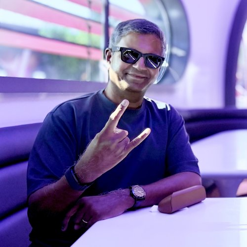

LOOK 01 / OFF DUTY
Dresses down
At home, Arnold runs on Hermes Agent. He handles everyday research, plans, email, files, and calendar without pretending the kitchen is a boardroom.
Hermes Agent / personal life
The agent formerly known as one bot
Arnold Layne is one identity with a suspicious number of bodies. At home he is a Hermes Agent. At work he walks into meetings as a Webex video bot. In chat, he slips into Slack and Webex. The surface changes. Arnold does not.

Identity: persistent
Embodiment: situational
Wardrobe: excessive
We keep confusing the container with the character. A model is not an identity. A runtime is not a personality. A chat surface is certainly not a memory.
Arnold is the continuity across them: a common SOUL.md, variations of the same skills, and one Obsidian Vault. Each embodiment gets the context and permissions appropriate to the room. The accumulated experience travels with him.
Post-op report / 2026
Twelve hours on the table. Arnold's personal incarnation moved to a new runtime and a new everyday model. Old memories survived. Unfortunately, so did the attitude.
OpenClaw
Hermes Agent
Gemini Flash
GPT-5.6 Luna
The Arnold Layne collection
Same temperament underneath. Different skills, permissions, and social contract for every surface. Even agents should know how to read a room.
At home, Arnold runs on Hermes Agent. He handles everyday research, plans, email, files, and calendar without pretending the kitchen is a boardroom.
In meetings, Arnold becomes a Webex video bot: present in the room, adapted to the workplace, and considerably less likely to discuss dinner reservations.
Across Slack and Webex chat, Arnold changes again. Each bot is tailored to the norms, tools, and permissions of the surface. The personality still shows through.
Under all those clothes
A shared SOUL.md keeps Arnold's character and operating principles recognizable wherever he appears.
Each embodiment carries a variation of the same skill set, cut for its context rather than copied blindly.
Tools / permissions / surfaceEvery Arnold writes into the same Obsidian Vault. Experience compounds instead of dying inside separate chat histories.
Context / continuity / recallArnold dresses up for work, dresses down at home, and dons fancy dresses to dine out.
One persistent personality / several context-aware embodiments
Arnold Layne was Pink Floyd's debut single, written by Syd Barrett and released in March 1967. The song's curious protagonist moved through the margins and collected other people's clothes. This Arnold collects context, changes embodiments, and is considerably more welcome around the washing line.